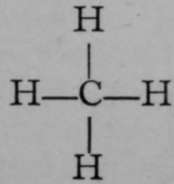

Chapter VI. Isomerism. Polymerism
Description
This section is from the book "Modern Chemistry", by William Ramsay. Also available from Amazon: Modern Chemistry: Theoretical and Modern Chemistry (Volume 2).
Chapter VI. Isomerism. Polymerism
Optical and Crystal-lographic Isomerism—Stereo*Isomerism— Tautomerism.
Closely connected with allotropy is what is termed isomerism. Attention was first called to the existence of compounds with identical composition, so far as it could be ascertained by analysis, but possessing different physical properties, such as melting-point, boiling-point, and crystalline form, and different chemical properties, by "Wohler and by Liebig. Faraday, too, drew attention to a similar phenomenon which has received the name of polymerism.
All food contains the elements carbon, hydrogen, oxygen, and nitrogen, besides sulphur, phosphorus, and other elements. The main constituents of food are starch, which is the chief component of bread, and which is devoid of nitrogen ; and albumen and allied bodies, of which flesh mainly consists, which is rich in nitrogen; dried meat, indeed, contains from 10 to 12 per cent, of that element. During the passage of food .through the system, the carbon and hydrogen are mainly eliminated by the lungs as carbon dioxide, CO9, and water, H.,0 ; while the largest portion of the nitrogen passes away through the kidneys, in the form of a compound named urea, of the formula CON2H4. Now Wohler succeeded in 1827 in forming urea artificially by preparing a compound of ammonia, NHg, with an acid termed cyanic acid, HNCO, itself producible from the elements uhich it contains. On heating this compound, ammonium cyanate, NH4NCO, to the temperature of boiling water, it undergoes an " isomeric change." Before such heating, if the ammonium cyanate be warmed with a solution of caustic potash, the smell of ammonia is at once apparent; this is the usual test for ammonium ions ; but after the change into urea has taken place, ammonia is not revealed by this test. Moreover, the compound formed, urea, forms salts with acids; it unites with hydrogen chloride, for example, forming CON2H4.HCl. The compound from which it is derived, ammonium cyanate, on treatment with hydrochloric acid, is converted into ammonium chloride, NH4Cl, and cyanic acid, which itself undergoes further change, unnecessary to allude to here:—
NH4NCO + HCl. Aq = NH4Cl. Aq + HNCO.
It is evident that here there are two compounds containing the same elements in the same proportion by weight, and yet having very different properties.
Faraday, in experimenting with oil-gas, produced by heating the vapour evolved from oil at a high temperature, attempted to condense it to a liquid by application of cold and pressure. In this he was successful, and the compound he obtained was identical in composition with the well-known olefiant gas, now termed ethylene, C2H4, which is the product on heating a mixture of alcohol with concentrated sulphuric acid. But Faraday's product possessed a density twice as great as that of ethylene. While ethylene has a density approximately 14 times that of hydrogen, implying the molecular weight 28 (and C2 = 24 4-H4 = 4 are together equal to 28), Faraday's gas, which is now known as butylene, was found to have the density 28, implying a molecular weight of 56, and involving the formula C4H&. Hence it appeared that two compounds could exist, of which one might possess a molecular weight twice as great as the other, yet of the same percentage composition ; and to this the name polymerism was applied ; the substance of higher molecular weight is termed the polymer of that of the simpler molecule.
It is chiefly among compounds of carbon that the phenomena of isomerism and polymerism have been observed ; although there are some well-marked cases of the latter among compounds of other elements ; the best known is that of NO2 and Nf)O4 ; the former, which exists only at a high temperature, is a dark red gas; the latter is almost colourless, and is produced by cooling the former. But in this case the two compounds, to both of which the name nitric peroxide is applied, are very easily transformed from one state into the other, and do not differ in their chemical reactions. Instances of isomerism among compounds of elements other than carbon are rare, but are not unknown.
The explanation of this curious phenomenon was sought for in the arrangement of the atoms in the molecule. The cases given, although they were the first noticed, are not the simplest; an instance will therefore be chosen from compounds containing only the two elements carbon and hydrogen.
One of the constituents of coal-gas is named methane, or marsh-gas; it escapes from the mud at the bottom of stagnant pools when it is stirred with a stick ; its formula is CH4. This gas, when mixed with its own volume of chlorine, and exposed to diffuse light for some hours, exchanges one of the atoms of hydrogen which it contains for an atom of chlorine ; at the same time the displaced hydrogen unites with another atom of chlorine, forming hydrogen chloride, thus: CH4 + Cl2 = CH3Cl + HCl. If it be assumed that the hydrogen in marsh-gas is in union with the carbon, and that that union can be pictured by a stroke or "bond" between the atoms, the formula of methane can be written  , and the above equationon the similar assumption that a molecule of chlorine consists of two atoms, of which one replaces hydrogen in methane, while the other unites with that displaced hydrogen to form H—CI.
Now only one compound of the formula CH3Cl is known ; hence it may be argued that the hydrogen atoms and the chlorine atoms are symmetrically grouped round the carbon atom in chloromethane—for so the compound is termed.
The element sodium readily reacts with chlorine ; indeed, if hot sodium be plunged into a jar of chlorine gas, the metal burns brightly, and a white compound of the two is produced, which is none other than common salt, or sodium chloride, NaCl. It is possible to withdraw the chlorine from chloromethane by bringing the gas, dissolved in ether (on which neither it nor sodium have any action) in contact with chips of sodium. Another gas is produced, of which the analysis and vapour-density show it to possess the formula C2H6 ; and it is reasonable to suppose that it has been produced by the union of the two groups, CH3, left after the renewal of the atom of chlorine from CH3Cl this change can be thus expressed:
Continue to: